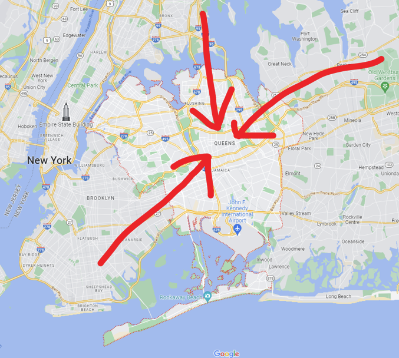

Bio
My name is Sean Ham, I'm from Queens, NY. Like pretty much everyone else in this class I'm in the Comp Ex program. The classes I'm enrolled in are as follows:
- Introduction to Environmental Studies
- Computing Exploration Seminar
- Software Development for Transfers
- Web & Mobile I
- RIT 365: RIT Connections
- Calculus II
Hobbies/Skills
I don't really have a lot of hobbies at the moment, but some things i've picked up over the years are:
- 3 Years of Trombone experience
- Some very basic household Korean
- 4 years of Japanese
- Around 2 years of programming "expertise".
- A lot of reading